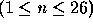
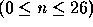

| 18-Wheeler Caravans (aka Semigroups) |
A binary operation on a set S is a function that assigns to each ordered pair of elements of S a unique element of S. We often use some special symbol (such as * or +) to represent a binary operation. For example, if we use the symbol '#' to represent some arbitrary binary operation on the set S = {a,b,c}, then a#b equals some element of S (as does b#a, a#a, a#c, and every other possible permutation).
From the above definition, it would follow that the normal definitions for addition, subtraction, and multiplication are all binary operations when defined on the set of all integers. However, division (the mathematical kind - not ``integer division'') is not a binary operation for the set of integers, since 1/2=0.5 which is not an integer.
The use of the word ``ordered'' in the definition for binary operations is important, for it allows the possibility that the element assigned to a#b may be different from the one assigned to b#a. In the case of integers, this is evident with the binary operation we know as subtraction, since 5 - 3 is not equal to 3 - 5. If in a particular case, x # y = y # x for all elements x and y in the set, we say that the binary operation is commutative. The standard addition operation on the set of integers is commutative.
For the remainder of this problem we will only concern ourselves with small sets (1 to 26 elements). For small sets such as these, the unique assignments that define an operation can be expressed by simply writing down all possible assignments in a "multiplication" table. For instance, the binary operation '#' on the set S={a,b,c} might be defined by:
# | a b c
---------
a | b c b
b | a c b
c | c b a
The left column of the table represents the first number in an ordered pair, and the top row represents the second. Thus, in this example, a # b = c, b # a = a, and c # c = a. Notice that the body of the table consists solely of elements from the set S, which must be true for any binary operation. Also notice that this operation is not commutative, since b # a is not equal to a # b.
A binary operation, #, on a set S is associative if (x#y)#z = x#(y#z) for all elements x, y, and z in the set X. In the example with the table above, the operation is not associative, since (a#b)#c is not equal to a#(b#c). If a binary operation, #, on a set is associative, then we say that the pair <S,#> forms a semigroup. If the binary operation is commutative as well as associative, then we say that the semigroup is commutative.
Write a program that will read the elements of sets together with corresponding ``multiplication'' tables which denote possible binary operations. Your program should then determine if the set S with the defined operation constitutes a semigroup. If the set and corresponding table do not form a semigroup, your program should report that the pair do not form a semigroup and state why. If the set and operation pair do form a semigroup, your program should check to see if the semigroup is also a commutative semigroup.
Thus, for each set and corresponding table one of the following four results is possible:
NOT A SEMIGROUP: x#y = z WHICH IS NOT AN ELEMENT OF THE SET NOT A SEMIGROUP: (x#y)#z IS NOT EQUAL TO x#(y#z) SEMIGROUP BUT NOT COMMUTATIVE (x#y IS NOT EQUAL TO y#x) COMMUTATIVE SEMIGROUP
In the first three results you should substitute actual elements of the set that yield a counter-example to the definitions for a semigroup and a commutative operation. If more than one counter-example exist, simply use one of your choice.
The first line of the input file contains a single integer, n where  .
The next line of the input file will contain n unique, lower case letters of the alphabet. These letters represent the elements of the set. Although each letter is unique (no duplicates), they are not necessarily arranged in alphabetical order.
The next n lines contain the body of the ``multiplication'' table that corresponds to the elements in the previous line. Each of these lines will contain n lower case letters. For example, the first such line corresponds to the first row of the body of the table. We will assume that the ordering of the rows and columns of the table coincide with the ordering in the line that defines the elements of the set.
After the table, the input file will contain a line with a single integer, n where  . If n > 0 then there is another set and corresponding table contained in the next n+1 lines that should be reported. If n = 0 then you have reached the end of the input file.
The output file should contain the following for each set and table found in the input file:
S = {a,b,c,d}#|abcd-+' followed by n more dashes '-'. For example:
-+----a|abcd
3 abc abc bca cab 3 abc abc bca cad 4 acdb aaaa aaca aada aaab 5 abcde aaaaa bbabb cccbc ddddd eeeee 0
S = {a,b,c}
#|abc
-+---
a|abc
b|bca
c|cab
COMMUTATIVE SEMIGROUP
------------------------------
S = {a,b,c}
#|abc
-+---
a|abc
b|bca
c|cad
NOT A SEMIGROUP: c#c = d WHICH IS NOT AN ELEMENT OF THE SET
------------------------------
S = {a,c,d,b}
#|acdb
-+----
a|aaaa
c|aaca
d|aada
b|aaab
SEMIGROUP BUT NOT COMMUTATIVE (c#d IS NOT EQUAL TO d#c)
------------------------------
S = {a,b,c,d,e}
#|abcde
-+-----
a|aaaaa
b|bbabb
c|cccbc
d|ddddd
e|eeeee
NOT A SEMIGROUP: (b#a)#c IS NOT EQUAL TO b#(a#c)
------------------------------